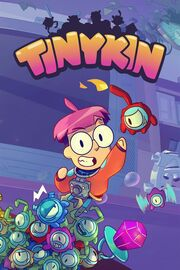

Tinykin
Tinykin
Detalles
|  | |
| Tiempo de juego | No Jugado |
| Última actividad | Nunca |
| Añadido | 6/12/2022 23:29:22 |
| Modificado | Nunca |
| Estado de finalización | must play |
| Librería | Xbox |
| Fuente | Xbox Game Pass |
| Plataforma | PC (Windows) |
| Fecha de lanzamiento | 30/8/2022 |
| Puntuación de la Comunidad | |
| Puntuación de la Crítica | |
| Puntuación de usuario | |
| Género | |
| Desarrollador | Splashteam |
| Editor | tinyBuild |
| Característica | |
| Enlaces | |
| Tag | Game Pass |
Descripción
Milo arrives on Earth to find that he's way too small, everybody's gone and a day hasn't passed since 1991!
Team up with the mysterious tinykin and use their unique powers to create ladders, bridges, explosions and a lot more!
Find a way home through a sprawling ant-sized metropolis, and unravel Earth's biggest mystery!
-Explore cities of ants, beetles and other insects built inside of a giant house
-Meet characters everywhere you go and learn their stories and history
-Catch over a hundred tinykin in each city, and use their special abilities to climb higher, break down doors and solve the city's problems!
-Skateboard around on Milo's tiny soap-board! Jump, grind and hover around the house
-Collect upgrades to improve Milo's bubble-pack, build out the Ardwin Museum and complete Ridmi's mysterious machine!